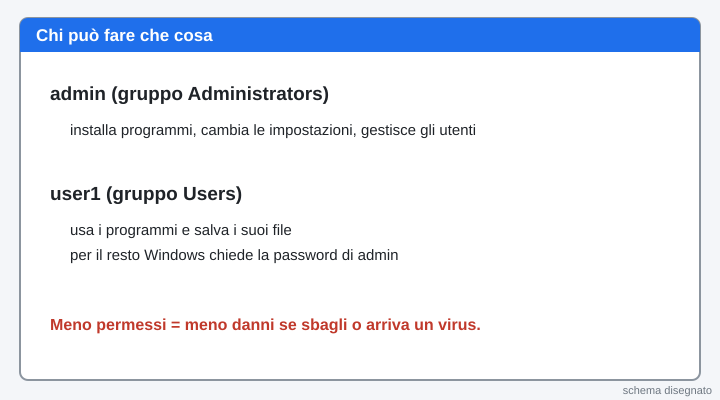
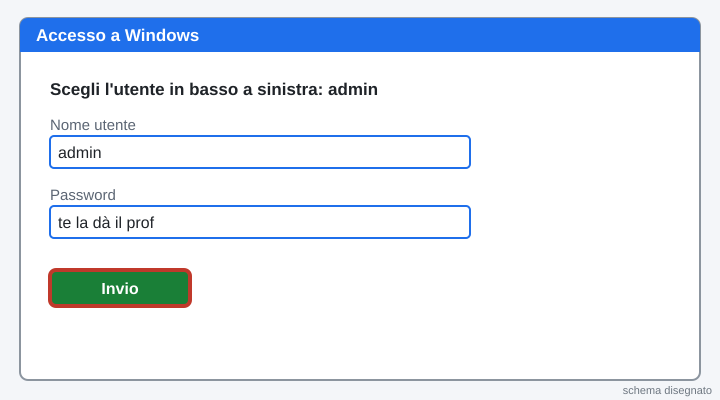
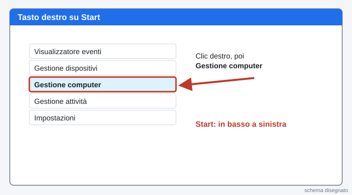
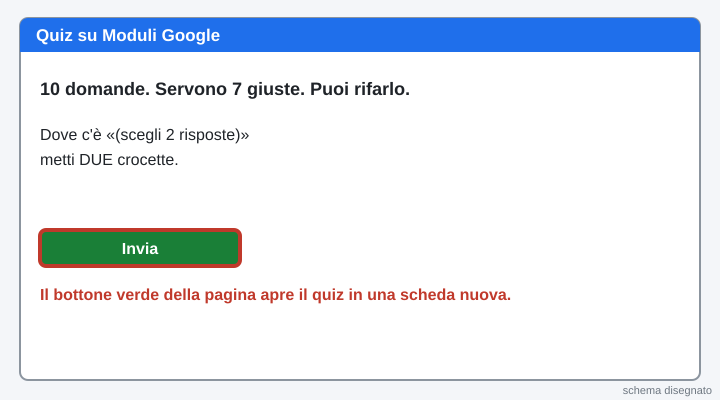
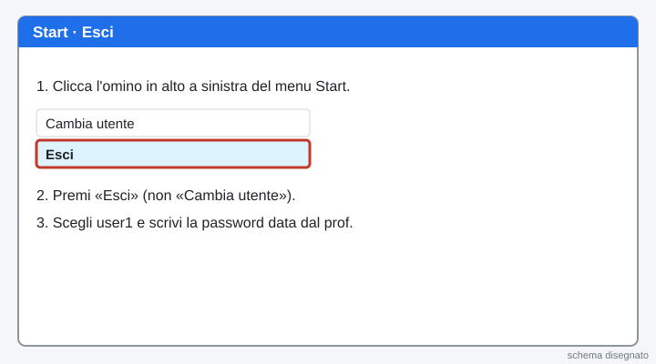
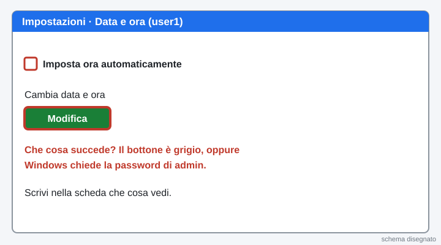
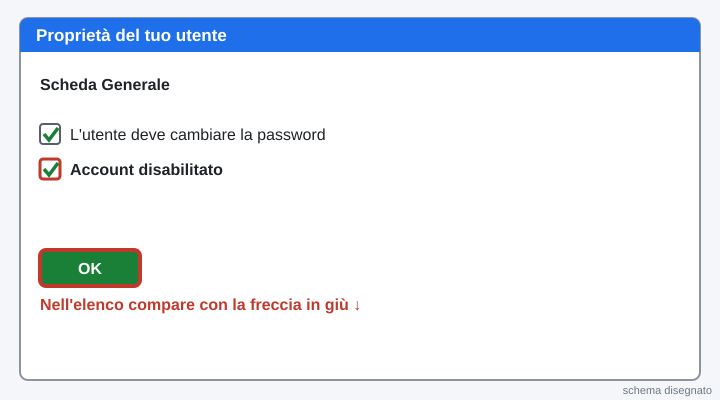

3INF · Laboratorio · lunedì 09/11/2026 · ora 1 (8-9) · ognuno sul suo PC · si consegna la scheda con un bottone
Ora 1 · Protezione degli account: utenti Windows
আজকের কাজ: Windows-এর ব্যবহারকারী (অ্যাকাউন্ট) দেখা আর বোঝা।
La pagina viene aggiornata spesso durante la lezione: premi F5 per vedere la versione nuova.
Hai un dubbio sul lavoro? Scrivi all'assistente in fondo alla pagina: risponde subito. Il Professore serve per un PC rotto.
Chi sei?
Scrivi nome e cognome e scegli il numero del tuo PC (adesivo sul PC).
তোমার নাম ও পদবি লেখো আর PC-র নম্বর বেছে নাও।
Sei bloccato? Scrivi la domanda nella casella dell'assistente in fondo alla pagina: ti risponde subito. Alza la mano solo se il PC non funziona.
আটকে গেলে পাতার নিচের সহকারী বাক্সে প্রশ্ন লেখো। শুধু PC কাজ না করলে হাত তোলো।
La teoria in 5 schede
Leggi dall'alto in basso. Sono cinque idee, una frase l'una.

1. Che cos'è un account
Un account è il tuo nome dentro il PC. Con l'account Windows sa chi sei e che cosa puoi fare.
অ্যাকাউন্ট হলো PC-র ভেতরে তোমার নাম। অ্যাকাউন্ট দেখে Windows জানে তুমি কে এবং কী করতে পারো।
2. Amministratore e utente standard
L'amministratore può cambiare tutto: installare programmi e togliere altri utenti. L'utente standard usa il PC ma non può rompere il sistema. Quando prova a fare una cosa da amministratore, Windows apre una finestra (UAC) e chiede la password di admin.
অ্যাডমিনিস্ট্রেটর সবকিছু বদলাতে পারে: প্রোগ্রাম ইনস্টল করা, অন্য ব্যবহারকারী সরানো। সাধারণ ব্যবহারকারী PC ব্যবহার করে, কিন্তু সিস্টেম নষ্ট করতে পারে না। অ্যাডমিনের কাজ করতে গেলে Windows একটা জানালা (UAC) খুলে admin-এর পাসওয়ার্ড চায়।
3. Il gruppo
Un gruppo è una squadra di utenti con gli stessi permessi. Administrators è la squadra dei capi. Users è la squadra degli utenti normali.
গ্রুপ হলো একই অনুমতিওয়ালা ব্যবহারকারীদের দল। Administrators হলো প্রধানদের দল। Users হলো সাধারণ ব্যবহারকারীদের দল।
4. Il servizio
Un servizio è un programma che lavora dietro le quinte, senza finestre. Per esempio quello che serve per stampare.
সার্ভিস হলো পেছনে চলা প্রোগ্রাম, কোনো জানালা ছাড়া। যেমন প্রিন্ট করার প্রোগ্রাম।
5. Perché user1 non è admin
Meno permessi ha un utente, meno danni può fare un errore o un virus. Si chiama principio del privilegio minimo.
ব্যবহারকারীর অনুমতি যত কম, ভুল বা ভাইরাসে ক্ষতি তত কম। একে বলে ন্যূনতম অধিকারের নীতি।
Parole nuove
| Account | il nome con cui entri nel PC |
|---|---|
| Amministratore | utente che può cambiare tutto (qui: admin) |
| Utente standard | utente con meno permessi (qui: user1) |
| Gruppo | squadra di utenti con gli stessi permessi (Administrators, Users) |
| Servizio | programma che lavora dietro le quinte, senza finestra |
| Gestione computer | finestra di Windows con utenti, gruppi e servizi |
| UAC (Controllo dell'account utente) | finestra che chiede la password di admin |
| Privilegio minimo | ognuno ha solo i permessi che gli servono |
1Entra come admin
admin হয়ে ঢোকো
Accendi il PC e scegli l'utente admin. La password te la dà il prof.
PC চালু করো, ব্যবহারকারী admin বেছে নাও। পাসওয়ার্ড শিক্ষক দেবেন।
Cosa devi vedere: Si apre il desktop di Windows.

2Vinci subito: apri Gestione computer
Gestione computer খোলো
Clicca con il tasto destro sul pulsante Start (in basso a sinistra). Nel menu clicca Gestione computer.
Start বোতামে (নিচে বাঁদিকে) ডান ক্লিক করো। মেনুতে Gestione computer ক্লিক করো।
Cosa devi vedere: Si apre una finestra con il titolo «Gestione computer». Il primo risultato è fatto.

3Apri l'elenco degli utenti
ব্যবহারকারীর তালিকা খোলো
A sinistra clicca Utenti e gruppi locali. Poi clicca la cartella Utenti.
বাঁদিকে Utenti e gruppi locali ক্লিক করো। তারপর Utenti ফোল্ডার ক্লিক করো।
Conta gli utenti e guarda quali hanno la freccia in giù: sono disattivati. Scrivili nella scheda in fondo.
ব্যবহারকারী গোনো আর কাদের নামে নিচমুখী তীর আছে দেখো: তারা বন্ধ। নিচের ফর্মে লেখো।
Cosa devi vedere: Ci sono admin e user1. Administrator e Guest hanno la freccia in giù.

4Chi è standard e chi è amministratore
কে সাধারণ, কে অ্যাডমিন
Fai doppio clic su user1. Clicca la scheda Membro di e leggi il gruppo.
user1-এ ডাবল ক্লিক করো। Membro di ট্যাব ক্লিক করো, গ্রুপটা পড়ো।
Clicca Annulla. Fai lo stesso con admin. Non cambiare niente.
Annulla ক্লিক করো। admin-এও একই করো। কিছু বদলাবে না।
Cosa devi vedere: user1 è in Users. admin è in Administrators.

5Guarda i gruppi
গ্রুপগুলো দেখো
Clicca la cartella Gruppi. Fai doppio clic su Administrators e leggi chi c'è dentro. Poi clicca Annulla.
Gruppi ফোল্ডার ক্লিক করো। Administrators-এ ডাবল ক্লিক করে ভেতরে কে আছে পড়ো। তারপর Annulla ক্লিক করো।
Cosa devi vedere: Nel gruppo Administrators c'è admin, non user1.

6Ripasso veloce
দ্রুত পুনরাবৃত্তি
Chi può installare programmi senza chiedere la password?
কে পাসওয়ার্ড ছাড়া প্রোগ্রাম ইনস্টল করতে পারে?
In quale gruppo sta user1?
user1 কোন গ্রুপে?
Come si chiama l'idea «meno permessi, meno danni»?
«কম অনুমতি, কম ক্ষতি» ধারণাটার নাম কী?
Cosa devi vedere: tre risposte giuste in verde.

7Apri Servizi
Servizi খোলো
Clicca Start, scrivi Servizi e premi Invio.
Start ক্লিক করো, Servizi লেখো, Invio চাপো।
Cerca Spooler di stampa. Leggi Stato e Tipo di avvio e scrivili nella scheda. Solo guardare: non fermare niente.
Spooler di stampa খোঁজো। Stato আর Tipo di avvio পড়ে ফর্মে লেখো। শুধু দেখো, কিছু বন্ধ কোরো না।
Cosa devi vedere: Lo Spooler di stampa è «In esecuzione» e «Automatico».

8Quiz su Moduli (10 domande, servono 7 giuste)
Moduli-তে কুইজ (১০টি প্রশ্ন, ৭টি ঠিক চাই)
Premi il bottone verde: si apre il quiz in una scheda nuova. Dove c'è «scegli 2 risposte» metti DUE crocette. Puoi rifarlo: vale il migliore.
সবুজ বোতাম চাপো: কুইজ নতুন ট্যাবে খুলবে। যেখানে «scegli 2 risposte» লেখা সেখানে দুটো টিক দাও। আবার করা যায়: সবচেয়ে ভালোটা গোনা হয়।
Apri il quiz su ModuliCosa devi vedere: Alla fine del quiz torna a questa pagina.

9Esci e entra come user1
বেরিয়ে user1 হয়ে ঢোকো
Clicca Start, poi l'omino in alto a sinistra, poi Esci. Entra con user1 (la password te la dà il prof).
Start ক্লিক করো, তারপর উপরে বাঁদিকের মানুষ-আইকন, তারপর Esci। user1 দিয়ে ঢোকো (পাসওয়ার্ড শিক্ষক দেবেন)।
Cosa devi vedere: Il desktop di user1 si apre (può metterci un minuto).

10Prova 1: cambia l'ora
পরীক্ষা ১: সময় বদলাও
Clicca Start, poi l'ingranaggio Impostazioni, poi Data e ora. Togli la spunta a «Imposta ora automaticamente» e prova a premere Modifica.
Start, তারপর দাঁতচাকা Impostazioni, তারপর Data e ora। «Imposta ora automaticamente»-র টিক তোলো আর Modifica চাপার চেষ্টা করো।
Scrivi nella scheda che cosa vedi. Poi rimetti la spunta.
ফর্মে লেখো কী দেখলে। তারপর টিকটা আবার দাও।
Cosa devi vedere: user1 non riesce a cambiare l'ora, oppure Windows chiede la password di admin.

11Prova 2: Esegui come amministratore
পরীক্ষা ২: অ্যাডমিন হিসেবে চালাও
Clicca Start e scrivi cmd. Clicca con il tasto destro su Prompt dei comandi, poi Esegui come amministratore.
Start ক্লিক করো, cmd লেখো। Prompt dei comandi-এ ডান ক্লিক করে Esegui come amministratore চাপো।
Windows chiede la password di admin. Premi No. Scrivi nella scheda che cosa hai visto.
Windows admin-এর পাসওয়ার্ড চায়। No চাপো। ফর্মে লেখো কী দেখলে।
Cosa devi vedere: Finestra «Controllo dell'account utente» con nome utente e password.

12Torna come admin
আবার admin হয়ে ঢোকো
Clicca Start, l'omino, Esci. Entra con admin.
Start, মানুষ-আইকন, Esci। admin দিয়ে ঢোকো।
Cosa devi vedere: Sei di nuovo admin.

13Fallo tuo: crea un utente di prova
নিজের মতো: একটা পরীক্ষার ব্যবহারকারী বানাও
Apri Gestione computer, Utenti. Clicca con il tasto destro nello spazio vuoto e scegli Nuovo utente…
আবার Gestione computer, Utenti খোলো। ফাঁকা জায়গায় ডান ক্লিক করে Nuovo utente… বেছে নাও।
Scrivi un nome utente tuo, senza spazi (per esempio il tuo soprannome). Scegli una password che sai solo tu e che non scrivi in questa pagina. Premi Crea, poi Chiudi.
নিজের একটা ব্যবহারকারী নাম লেখো, ফাঁকা ছাড়া (যেমন ডাকনাম)। এমন পাসওয়ার্ড দাও যা শুধু তুমি জানো, এই পাতায় লিখবে না। Crea, তারপর Chiudi চাপো।
Cosa devi vedere: Il tuo nuovo utente compare nell'elenco. È in Users: controlla con «Membro di».

14Fallo tuo: disattiva il tuo utente
নিজের ব্যবহারকারী বন্ধ করো
Fai doppio clic sul tuo utente. Metti la spunta su Account disabilitato e premi OK.
নিজের ব্যবহারকারীতে ডাবল ক্লিক করো। Account disabilitato-এ টিক দাও, OK চাপো।
Cosa devi vedere: Accanto al nome compare la freccia in giù.

15Cancella il tuo utente
নিজের ব্যবহারকারী মুছে ফেলো
Clicca con il tasto destro sul tuo utente, poi Elimina, poi Sì. Così il PC torna come prima.
নিজের ব্যবহারকারীতে ডান ক্লিক করো, তারপর Elimina, তারপর Sì। এতে PC আগের মতো হয়ে যায়।
Cosa devi vedere: Il tuo utente non c'è più. Restano admin e user1.

16Mostralo: spiegalo al compagno
সঙ্গীকে বুঝিয়ে বলো
Racconta al compagno in 30 secondi: chi è admin e chi è user1, che cos'è un gruppo, perché user1 ha meno permessi, che cosa è successo con la password di admin.
৩০ সেকেন্ডে সঙ্গীকে বলো: admin আর user1 কে, গ্রুপ কী, user1-এর অনুমতি কম কেন, admin-এর পাসওয়ার্ড নিয়ে কী হলো।
Cosa devi vedere: Se sai spiegarlo con parole tue, l'hai capito.

17Scheda e Manda al prof
ফর্ম পূরণ আর Manda al prof
Compila la scheda qui sotto e premi il bottone verde Manda al prof. Un clic solo.
নিচের ফর্ম পূরণ করে সবুজ Manda al prof বোতাম চাপো। একবার ক্লিক।
Se il bottone non funziona: premilo di nuovo tra un minuto. La scheda resta salvata in questa pagina. Se ancora non va, scrivi all'assistente.

La pagina viene aggiornata spesso durante la lezione: premi F5 per vedere la versione nuova.